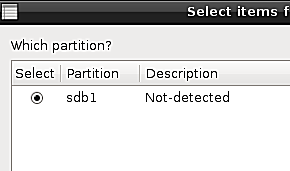

Resetear la contraseña de Windows NT, 200x, XP, Vista, Seven - Rescapp - Documentation
-
Paso 1Rescap busca las particiones en tu disco con el fichero: system32/config/sam .
-
Paso 2Si esas particiones se han encontrado Rescapp le presenta las particiones. Al mismo tiempo se le pregunta:
Which partition?Es decir, qué partición. Se supone que ha de elegir su Windows (seguramente s&oaute;lo vea uno) y pulsar el botón OK.

-
Paso 3Rescapp busca los usuarios del sistema basandose en la información previa.
-
Paso 4Se le pregunta:Choose Windows user to reset its passwordEs decir, elija qué usuario de Windows para reseatearle la contraseña. Se supone que ha de elegir el usuario cuya contraseña quiere resetear.

-
Paso 5Se le informa del proceso de reseteo de la contraseña de windows.El mensaje se explica a sí mismo. O bien obtiene:Windows password was reset OK! :) (Ha ido bien)oFailure! Windows password was not reset. Something went wrong! :((Algo ha ido mal)

-
Paso 6Un archivo llamado winpass.log.txt puede encontrarse en el directorio logs del escritorio.